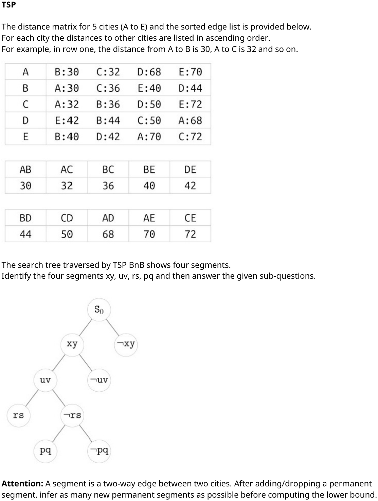
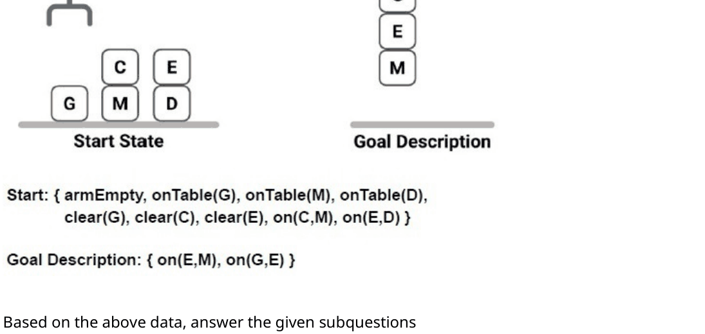

AI Quiz 2 · 2025 Term 2 — Study guide
- Time budget: ≈ 1 min per mark. Map trace ≈ 4 min, TSP node ≈ 3 min, game tree ≈ 3 min, planning ≈ 4 min.
- Order of attack: write h-values / sorted edge list / leaf values first, then the questions fall out one by one.
- Every trace below is machine-generated and cross-checked with the official key (✓ column); a ✗ would flag a transcription issue.
Q1–Q6Search · completeness on an infinite state space6 marks
Lesson · Week 5 · Completeness on infinite state spaces (Zeno traps)
- Breadth-First is complete whenever the branching factor is finite — the goal at depth d is generated after finitely many expansions, whatever the costs.
- Best-First (greedy on h) follows h only; it is complete here if G has a strictly smaller h than every competitor on OPEN at some point.
- Branch-and-Bound / A* order by g or g+h. If an infinite sequence of cheap steps has a finite sum below the goal's priority (1/2 + 1/4 + 1/8 + … = 1 < 3), the goal is never popped: the search is trapped in the Zeno branch. Complete only if every step costs ≥ ε > 0.
- WA*: raising w multiplies h, which can make the goal's priority (g + w·0) smaller than every trap node's (g + w·h) — escaping the trap. Always write the priority of G and of the trap nodes side by side.
- Geometric sums: 1 + a + … + a^(n−1) = (1 − a^n)/(1 − a), so g(A_k) = 1 − 2^−k < 1 for every k.
- Admissible needs h ≤ h* at every node: here h*(A_k) = (1 − 2^−k) + 3 ≥ 3 ≥ h = 1.
Lesson · Week 5 · A*, WA*, Branch-and-Bound on maps
The three algorithms in one table
| Priority (lowest first) | Guarantee | |
|---|---|---|
| A* | f = g + h | optimal if h admissible (graph search also needs consistency, or re-opening) |
| WA* (w) | f = g + w·h | cost ≤ w × optimal if h admissible — not optimal in general |
| Branch & Bound | g only (h = 0) | always optimal (uniform-cost behaviour on positive costs) |
Bookkeeping that the exam checks
- Each node is a (state, parent, g) record. Refined/expanded = popped from OPEN, not generated.
- Pop the lowest f. Tie → alphabetical (read the tie-breaker line every time).
- For every neighbour m of the popped node n: if new → add to OPEN with parent n; if already on OPEN/CLOSED with a larger g → re-parent to n (and re-open if it was in CLOSED).
- Stop when the goal is popped (not when generated). Path = follow parents back.
Admissibility test in 30 seconds
h is admissible iff h(n) ≤ h*(n) for every n, where h* is the true cheapest cost to G. To refute, find one violation. Fast hunt: look at G's neighbours first — if h(n) > cost(n→G) you are done. Manhattan distance is admissible only when every edge costs ≥ its grid length; the exam maps deliberately use cheap edges (cost 2 across 3 tiles, etc.) so the answer is almost always No.
Tricks for speed
- Write the h-value beside every node first (Manhattan = |Δx|+|Δy|, count tiles on the figure).
- A* with an inadmissible h can return a sub-optimal path: the goal gets popped through a path that looked cheap because h over-estimated the good branch.
- WA* with larger w behaves more greedily (head straight to G); with w=1 it is A*, with w→∞ it is Best-First.
- BnB on these maps = Dijkstra from S; its popped cost at G is the optimal cost. Use it to check whether A*/WA* paths are optimal.
Question data

Worked solution
| algorithm | priority of G (via S, g=3) | priority of A_k (g_k = 1 − 2^−k < 1) | who is popped? | finds G? |
|---|---|---|---|---|
| Breadth-First | G is generated at depth 1 with A1 | — | S expanded → G generated immediately | Yes |
| Best-First (h) | h(G) = 0 | h(A_k) = 1 | G has the smallest h → popped right after S | Yes |
| Branch-and-Bound (g) | 3 | g_k < 1 < 3 | A1, A2, A3, … forever (infinitely many nodes with g < 1) | No |
| A* (g+h) | 3 + 0 = 3 | g_k + 1 < 2 < 3 | A_k always cheaper than G → never reaches G | No |
| WA* w=3 (g+3h) | 3 + 0 = 3 | g_k + 3 ∈ [3.5, 4) | G (3) < every A_k (> 3.4) → G popped after S | Yes |
Heuristic check: h*(A_k) = (1 − 2^−k) + 3 ≥ 3 and h*(S) = 3, so h = 1 never exceeds h* → admissible. Admissibility does not rescue A* here: optimality is irrelevant when the search never terminates.
Answer sheet
| Q | asks for | answer | key | why / how |
|---|---|---|---|---|
| Q1 | Does Breadth-First find the goal? (A=Yes) | A | ✓ | finite branching ⇒ G (depth 1) is generated |
| Q2 | Does Best-First find the goal? (A=Yes) | A | ✓ | h(G)=0 beats h=1 of every A_k and S |
| Q3 | Does Branch-and-Bound find the goal? (B=No) | B | ✓ | g(A_k) < 1 < 3 = g(G): an infinite chain of cheaper nodes is always expanded first |
| Q4 | Does A* find the goal? (B=No) | B | ✓ | f(A_k) = g_k + 1 < 2 < 3 = f(G) |
| Q5 | Does WA* (w=3) find the goal? (A=Yes) | A | ✓ | f(A_k) = g_k + 3 > 3 = f(G) — weight lets G jump the queue |
| Q6 | Is h admissible? (A=Yes) | A | ✓ | h* ≥ 3 at every node, h ≤ 1 |
Q7–Q11TSP Branch-and-Bound · reading a partial search tree5 marks
Lesson · Week 5 · TSP Branch-and-Bound (include / exclude segments)
Search tree
Root S0 = all tours. Pick the shortest undecided segment xy (tie → alphabetical). Child 1 = S0 + xy (include), child 2 = S0 + ~xy (exclude). Always refine the open node with the smallest lower bound; stop when the cheapest open node is a complete tour.
Lower bound of a node
For each city take the two cheapest allowed edges (permanently-included edges are forced in; excluded ones are not allowed), sum over all cities, then divide by 2 (each segment is counted at both ends).
Inference rules — apply until nothing changes
- Degree 2 reached: a city with 2 included segments → exclude all its other segments.
- Only two options left: a city with exactly 2 non-excluded segments → include both.
- No sub-tours: an included path that would close into a cycle shorter than N cities → exclude the closing segment.
Counting tours in a node: after full inference, the number of Hamiltonian cycles that contain every included and avoid every excluded segment. (N cities → (N−1)!/2 tours in S0: 5→12, 6→60.) Included + excluded counts usually give the fastest sanity check: if included = N the node is a single tour.
Question data

Worked solution
Distance matrix & sorted segment list
| A | B | C | D | E | |
|---|---|---|---|---|---|
| A | · | 30 | 32 | 68 | 70 |
| B | 30 | · | 36 | 44 | 40 |
| C | 32 | 36 | · | 50 | 72 |
| D | 68 | 44 | 50 | · | 42 |
| E | 70 | 40 | 72 | 42 | · |
Sorted segments (cheapest first): AB30 < AC32 < BC36 < BE40 < DE42 < BD44 < CD50 < AD68 < AE70 < CE72
Root S0 lower bound
| city | two cheapest allowed segments | sum |
|---|---|---|
| A | AB=30 + AC=32 | 62 |
| B | AB=30 + BC=36 | 66 |
| C | AC=32 + BC=36 | 68 |
| D | DE=42 + BD=44 | 86 |
| E | BE=40 + DE=42 | 82 |
| Σ | 364 → ÷2 = 182 |
Reading the tree
Each node refines with the next-shortest undecided segment in the sorted list: xy = AB (30), uv = AC (32), rs = BC (36), then after ~BC the next undecided one is pq = BE (40).
Node ~xy = (S0, ~AB)
| city | two cheapest allowed segments | sum |
|---|---|---|
| A | AC=32 + AD=68 | 100 |
| B | BC=36 + BE=40 | 76 |
| C | AC=32 + BC=36 | 68 |
| D | DE=42 + BD=44 | 86 |
| E | BE=40 + DE=42 | 82 |
| Σ | 412 → ÷2 = 206 |
Node rs = (S0, AB, AC, BC)
AB + AC + BC are a triangle A–B–C: a sub-tour of 3 < 5 cities, so 0 tours are represented — the node is a dead end and is not expanded further (that is why rs is a leaf in the figure).
Node ~pq = (S0, AB, AC, ~BC, ~BE)
| # | because… | ⇒ |
|---|---|---|
| 1 | A already has 2 included segments (AB, AC) | exclude AD |
| 2 | A already has 2 included segments (AB, AC) | exclude AE |
| 3 | B has only 2 segments left (AB, BD) | include BD |
| 4 | E has only 2 segments left (CE, DE) | include CE |
| 5 | E has only 2 segments left (CE, DE) | include DE |
| 6 | C already has 2 included segments (AC, CE) | exclude CD |
Forced tour: A–B–D–E–C–A = 30 + 44 + 42 + 72 + 32 = 220 (1 tour).
| city | two cheapest allowed segments | sum |
|---|---|---|
| A | AB=30 + AC=32 | 62 |
| B | AB=30 + BD=44 | 74 |
| C | AC=32 + CE=72 | 104 |
| D | DE=42 + BD=44 | 86 |
| E | DE=42 + CE=72 | 114 |
| Σ | 440 → ÷2 = 220 |
Answer sheet
| Q | asks for | answer | key | why / how |
|---|---|---|---|---|
| Q7 | lower bound of S0 | 182 | ✓ | Σ two cheapest per city (62+66+68+86+82 = 364) ÷ 2 |
| Q8 | first segment selected for refining S0 | AB | ✓ | shortest segment in the sorted list |
| Q9 | cost of node ~xy = (S0,~AB) | 206 | ✓ | recompute two cheapest allowed segments per city without AB, ÷ 2 |
| Q10 | # tours in node rs | 0 | ✓ | AB, AC, BC close a triangle ⇒ no Hamiltonian cycle |
| Q11 | cost of node ~pq | 320 (official) | ⚠ | my derivation of (AB, AC, ~BC, ~BE) gives 220: see note |
Q12–Q18Games · best strategy, Alpha-Beta, SSS*7 marks
Lesson · Week 7 · SSS* (best-first game-tree search)
SSS* keeps an OPEN list of (node, status, h) ordered by h descending (an upper bound on the root value). Ties: newly inserted entries go in front of equal-h entries.
- Start with (root, LIVE, +∞). Pop the top entry.
- LIVE leaf → (leaf, SOLVED, min(h, eval)). LIVE MAX → push all children LIVE (same h). LIVE MIN → push only its first child LIVE.
- SOLVED node n with parent MAX → (parent, SOLVED, h) and purge every OPEN entry below that parent (the parent's other branches are no longer needed). SOLVED n, parent MIN → push the next sibling LIVE, or (parent, SOLVED, h) if n was the last child.
- Stop when (root, SOLVED, h) is popped: h is the minimax value.
Initial cluster = the leaves that become SOLVED before any smaller h appears — first-descent of the tree, one leaf per MIN pair. Leaves SOLVED later are the ones listed in "SOLVED (other than initial)" questions. A pruned-from-queue SOLVED leaf is one removed by the purge step without ever being popped.
Question data

Worked solution
Cut log
| node | cut | why | leaves pruned |
|---|---|---|---|
| MIN {G…I} | alpha-cut after child 1 (value 30) | α=58, β=∞ → value ≤ α | H, I |
SSS* trace — entries are node.status.h (L = LIVE, S = SOLVED); OPEN is sorted top→bottom
| # | popped | pushed | purged | OPEN after |
|---|---|---|---|---|
| 1 | {A…I}.L.∞ | {A…C}.L.∞, {D…F}.L.∞, {G…I}.L.∞ | {A…C}.L.∞, {D…F}.L.∞, {G…I}.L.∞ | |
| 2 | {A…C}.L.∞ | A.L.∞ | A.L.∞, {D…F}.L.∞, {G…I}.L.∞ | |
| 3 | A.L.∞ | A.S.54 | {D…F}.L.∞, {G…I}.L.∞, A.S.54 | |
| 4 | {D…F}.L.∞ | D.L.∞ | D.L.∞, {G…I}.L.∞, A.S.54 | |
| 5 | D.L.∞ | D.S.78 | {G…I}.L.∞, D.S.78, A.S.54 | |
| 6 | {G…I}.L.∞ | G.L.∞ | G.L.∞, D.S.78, A.S.54 | |
| 7 | G.L.∞ | G.S.30 | D.S.78, A.S.54, G.S.30 | |
| 8 | D.S.78 | E.L.78 | E.L.78, A.S.54, G.S.30 | |
| 9 | E.L.78 | E.S.58 | E.S.58, A.S.54, G.S.30 | |
| 10 | E.S.58 | F.L.58 | F.L.58, A.S.54, G.S.30 | |
| 11 | F.L.58 | F.S.58 | F.S.58, A.S.54, G.S.30 | |
| 12 | F.S.58 | {D…F}.S.58 | {D…F}.S.58, A.S.54, G.S.30 | |
| 13 | {D…F}.S.58 | {A…I}.S.58 | A.S.54, G.S.30 | {A…I}.S.58 |
| 14 | {A…I}.S.58 | — | DONE: root value 58 |
Initial cluster (leaves SOLVED on the first dive, h = ∞): A, D, G. Leaves SOLVED later: E, F. SOLVED leaves purged without being popped: A, G.
Answer sheet
| Q | asks for | answer | key | why / how |
|---|---|---|---|---|
| Q12 | horizon nodes of the best strategy | D,E,F | ✓ | MAX takes its best child, MIN keeps both children |
| Q13 | horizon nodes pruned by Alpha-Beta | H,I | ✓ | leaves under a cut, in left-to-right search |
| Q14 | initial cluster of SSS* | A,D,G | ✓ | first dive: first leaf below every MIN node reached via all MAX alternatives |
| Q15 | SOLVED leaves other than the initial cluster | E,F | ✓ | leaves that become SOLVED after the initial cluster, before the root is solved |
| Q16 | Correct statements about Alpha-Beta (A,B,C,D) | ABCD | ✓ | α-cut is made by a MIN node and prunes MAX nodes' siblings…: α-cut ← MIN, prunes under MIN; β-cut ← MAX, prunes under MAX (all four statements hold) |
| Q17 | Condition that triggers an α-cut (A: eval ≤ α) | A | ✓ | a MIN node can stop as soon as a child value ≤ α: MAX above already has something at least as good |
| Q18 | # strategies for MAX, 2-ply, b=3 (B: 3) | B | ✓ | MAX chooses 1 of 3 root moves; MIN replies are all kept ⇒ 3 |
Q19–Q25Automated planning · blocks world, GSP7 marks
Lesson · Week 8 · Blocks-world planning & Goal Stack Planning
Operators (preconditions → effects)
| Action | Pre | Add | Delete |
|---|---|---|---|
| Pickup(x) | armEmpty, clear(x), onTable(x) | holding(x) | armEmpty, onTable(x) |
| Putdown(x) | holding(x) | armEmpty, onTable(x) | holding(x) |
| Unstack(x,y) | armEmpty, clear(x), on(x,y) | holding(x), clear(y) | armEmpty, on(x,y) |
| Stack(x,y) | holding(x), clear(y) | armEmpty, on(x,y) | holding(x), clear(y) |
Applicable (start state): all preconditions already true → check each against the start facts. Relevant (goal): the action adds at least one goal literal.
Goal Stack Planning (GSP)
- Push the compound goal, then its literals one by one (last literal ends on top).
- Pop a satisfied literal; for an unsatisfied literal choose an action that adds it, push the action, then its compound precondition and its literals.
- When an action reaches the top, execute it (update the state) and append it to the plan.
- After a compound goal is finished, re-check it — earlier subgoals may have been undone (Sussman anomaly) and the compound goal is re-pushed.
Optimal plan = BFS over states (shortest action sequence). GSP is not guaranteed optimal; swapping the order of goal literals can make it optimal or not — compute both orders, compare to BFS length.
Question data

Worked solution
Goal: on(E,M), on(G,E)
Optimal plan by BFS over states — 6 actions: Unstack(C,M) → Putdown(C) → Unstack(E,D) → Stack(E,M) → Pickup(G) → Stack(G,E)
Applicable in the start state (3 of 50 ground actions)
| action | preconditions | status |
|---|---|---|
| Unstack(C,M) | armEmpty, clear(C), on(C,M) | ✔ all true now |
| Unstack(E,D) | armEmpty, clear(E), on(E,D) | ✔ all true now |
| Pickup(G) | armEmpty, clear(G), onTable(G) | ✔ all true now |
Relevant to the goal (action adds a goal literal): Stack(E,M), Stack(G,E).
Goal Stack Planning trace (goal list pushed left→right, last literal on top) — plan found: Pickup(G) , Stack(G,E) , Unstack(C,M) , Putdown(C) , Unstack(G,E) , Putdown(G) , Unstack(E,D) , Stack(E,M) , Pickup(G) , Stack(G,E) (10 actions)
| # | top of stack | step | stack (top → bottom) |
|---|---|---|---|
| 1 | {on(E,M), on(G,E)} | push compound goal's literals | {on(E,M), on(G,E)} |
| 2 | on(G,E) | choose Stack(G,E) to achieve it | on(G,E) | on(E,M) | {on(E,M), on(G,E)} |
| 3 | clear(E) | already true → pop | clear(E) | holding(G) | {holding(G), clear(E)} | Stack(G,E) | on(E,M) | … |
| 4 | holding(G) | choose Pickup(G) to achieve it | holding(G) | {holding(G), clear(E)} | Stack(G,E) | on(E,M) | {on(E,M), on(G,E)} |
| 5 | onTable(G) | already true → pop | onTable(G) | clear(G) | armEmpty | {armEmpty, clear(G), onTable(G)} | Pickup(G) | … |
| 6 | clear(G) | already true → pop | clear(G) | armEmpty | {armEmpty, clear(G), onTable(G)} | Pickup(G) | {holding(G), clear(E)} | … |
| 7 | armEmpty | already true → pop | armEmpty | {armEmpty, clear(G), onTable(G)} | Pickup(G) | {holding(G), clear(E)} | Stack(G,E) | … |
| 8 | {armEmpty, clear(G), onTable(G)} | compound goal satisfied → pop | {armEmpty, clear(G), onTable(G)} | Pickup(G) | {holding(G), clear(E)} | Stack(G,E) | on(E,M) | … |
| 9 | Pickup(G) | execute → append to plan | Pickup(G) | {holding(G), clear(E)} | Stack(G,E) | on(E,M) | {on(E,M), on(G,E)} |
| 10 | {holding(G), clear(E)} | compound goal satisfied → pop | {holding(G), clear(E)} | Stack(G,E) | on(E,M) | {on(E,M), on(G,E)} |
| 11 | Stack(G,E) | execute → append to plan | Stack(G,E) | on(E,M) | {on(E,M), on(G,E)} |
| 12 | on(E,M) | choose Stack(E,M) to achieve it | on(E,M) | {on(E,M), on(G,E)} |
| 13 | clear(M) | choose Unstack(C,M) to achieve it | clear(M) | holding(E) | {holding(E), clear(M)} | Stack(E,M) | {on(E,M), on(G,E)} |
| 14 | on(C,M) | already true → pop | on(C,M) | clear(C) | armEmpty | {armEmpty, clear(C), on(C,M)} | Unstack(C,M) | … |
| 15 | clear(C) | already true → pop | clear(C) | armEmpty | {armEmpty, clear(C), on(C,M)} | Unstack(C,M) | holding(E) | … |
| 16 | armEmpty | already true → pop | armEmpty | {armEmpty, clear(C), on(C,M)} | Unstack(C,M) | holding(E) | {holding(E), clear(M)} | … |
| 17 | {armEmpty, clear(C), on(C,M)} | compound goal satisfied → pop | {armEmpty, clear(C), on(C,M)} | Unstack(C,M) | holding(E) | {holding(E), clear(M)} | Stack(E,M) | … |
| 18 | Unstack(C,M) | execute → append to plan | Unstack(C,M) | holding(E) | {holding(E), clear(M)} | Stack(E,M) | {on(E,M), on(G,E)} |
| 19 | holding(E) | choose Unstack(E,D) to achieve it | holding(E) | {holding(E), clear(M)} | Stack(E,M) | {on(E,M), on(G,E)} |
| 20 | on(E,D) | already true → pop | on(E,D) | clear(E) | armEmpty | {armEmpty, clear(E), on(E,D)} | Unstack(E,D) | … |
| 21 | clear(E) | choose Unstack(G,E) to achieve it | clear(E) | armEmpty | {armEmpty, clear(E), on(E,D)} | Unstack(E,D) | {holding(E), clear(M)} | … |
| 22 | on(G,E) | already true → pop | on(G,E) | clear(G) | armEmpty | {armEmpty, clear(G), on(G,E)} | Unstack(G,E) | … |
| 23 | clear(G) | already true → pop | clear(G) | armEmpty | {armEmpty, clear(G), on(G,E)} | Unstack(G,E) | armEmpty | … |
| 24 | armEmpty | choose Putdown(C) to achieve it | armEmpty | {armEmpty, clear(G), on(G,E)} | Unstack(G,E) | armEmpty | {armEmpty, clear(E), on(E,D)} | … |
| 25 | holding(C) | already true → pop | holding(C) | {holding(C)} | Putdown(C) | {armEmpty, clear(G), on(G,E)} | Unstack(G,E) | … |
| 26 | {holding(C)} | compound goal satisfied → pop | {holding(C)} | Putdown(C) | {armEmpty, clear(G), on(G,E)} | Unstack(G,E) | armEmpty | … |
| 27 | Putdown(C) | execute → append to plan | Putdown(C) | {armEmpty, clear(G), on(G,E)} | Unstack(G,E) | armEmpty | {armEmpty, clear(E), on(E,D)} | … |
| 28 | {armEmpty, clear(G), on(G,E)} | compound goal satisfied → pop | {armEmpty, clear(G), on(G,E)} | Unstack(G,E) | armEmpty | {armEmpty, clear(E), on(E,D)} | Unstack(E,D) | … |
| 29 | Unstack(G,E) | execute → append to plan | Unstack(G,E) | armEmpty | {armEmpty, clear(E), on(E,D)} | Unstack(E,D) | {holding(E), clear(M)} | … |
| 30 | armEmpty | choose Putdown(G) to achieve it | armEmpty | {armEmpty, clear(E), on(E,D)} | Unstack(E,D) | {holding(E), clear(M)} | Stack(E,M) | … |
| 31 | holding(G) | already true → pop | holding(G) | {holding(G)} | Putdown(G) | {armEmpty, clear(E), on(E,D)} | Unstack(E,D) | … |
| 32 | {holding(G)} | compound goal satisfied → pop | {holding(G)} | Putdown(G) | {armEmpty, clear(E), on(E,D)} | Unstack(E,D) | {holding(E), clear(M)} | … |
| 33 | Putdown(G) | execute → append to plan | Putdown(G) | {armEmpty, clear(E), on(E,D)} | Unstack(E,D) | {holding(E), clear(M)} | Stack(E,M) | … |
| 34 | {armEmpty, clear(E), on(E,D)} | compound goal satisfied → pop | {armEmpty, clear(E), on(E,D)} | Unstack(E,D) | {holding(E), clear(M)} | Stack(E,M) | {on(E,M), on(G,E)} |
| 35 | Unstack(E,D) | execute → append to plan | Unstack(E,D) | {holding(E), clear(M)} | Stack(E,M) | {on(E,M), on(G,E)} |
| 36 | {holding(E), clear(M)} | compound goal satisfied → pop | {holding(E), clear(M)} | Stack(E,M) | {on(E,M), on(G,E)} |
| 37 | Stack(E,M) | execute → append to plan | Stack(E,M) | {on(E,M), on(G,E)} |
| 38 | {on(E,M), on(G,E)} | push compound goal's literals | {on(E,M), on(G,E)} |
| 39 | on(G,E) | choose Stack(G,E) to achieve it | on(G,E) | on(E,M) | {on(E,M), on(G,E)} |
| 40 | clear(E) | already true → pop | clear(E) | holding(G) | {holding(G), clear(E)} | Stack(G,E) | on(E,M) | … |
| 41 | holding(G) | choose Pickup(G) to achieve it | holding(G) | {holding(G), clear(E)} | Stack(G,E) | on(E,M) | {on(E,M), on(G,E)} |
| 42 | onTable(G) | already true → pop | onTable(G) | clear(G) | armEmpty | {armEmpty, clear(G), onTable(G)} | Pickup(G) | … |
| 43 | clear(G) | already true → pop | clear(G) | armEmpty | {armEmpty, clear(G), onTable(G)} | Pickup(G) | {holding(G), clear(E)} | … |
| 44 | armEmpty | already true → pop | armEmpty | {armEmpty, clear(G), onTable(G)} | Pickup(G) | {holding(G), clear(E)} | Stack(G,E) | … |
| 45 | {armEmpty, clear(G), onTable(G)} | compound goal satisfied → pop | {armEmpty, clear(G), onTable(G)} | Pickup(G) | {holding(G), clear(E)} | Stack(G,E) | on(E,M) | … |
| 46 | Pickup(G) | execute → append to plan | Pickup(G) | {holding(G), clear(E)} | Stack(G,E) | on(E,M) | {on(E,M), on(G,E)} |
| 47 | {holding(G), clear(E)} | compound goal satisfied → pop | {holding(G), clear(E)} | Stack(G,E) | on(E,M) | {on(E,M), on(G,E)} |
| 48 | Stack(G,E) | execute → append to plan | Stack(G,E) | on(E,M) | {on(E,M), on(G,E)} |
| 49 | on(E,M) | already true → pop | on(E,M) | {on(E,M), on(G,E)} |
| 50 | {on(E,M), on(G,E)} | compound goal satisfied → pop | {on(E,M), on(G,E)} |
Goal order reversed (on(G,E), on(E,M)): GSP gives 6 actions vs optimal 6 → optimal. Original order: not optimal (10 vs 6).
Answer sheet
| Q | asks for | answer | key | why / how |
|---|---|---|---|---|
| Q19 | length of the optimal plan | 6 | ✓ | BFS over states; shortest action sequence |
| Q20 | applicable actions | BDE | ✓ | all preconditions hold in the start state |
| Q21 | relevant actions | BC | ✓ | adds at least one goal literal |
| Q22 | first four elements pushed | C | ✓ | bottom → top: the compound goal, then its literals in listed order (last literal on top) |
| Q23 | first action popped (executed) | A = Pickup(G) | ✓ | first action whose preconditions are all satisfied after the pushes |
| Q24 | does GSP find an optimal plan? (A=Yes, B=No) | B | ✓ | GSP 10 vs optimal 6 |
| Q25 | after swapping goal order, is GSP optimal? (A=Yes, B=No) | A | ✓ | reversed order gives 6 vs optimal 6 |